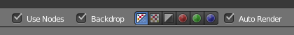
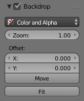

属性¶
标题¶

合成专有选项。
背景图¶
参考
面板：

背景图选项。
- 背景通道
- 设置图像显示模式为 颜色， 颜色和遮罩， 遮罩 。
- 缩放
- 设置背景图图片的显示比例。
- 偏移
- 改变背景图在屏幕显示的空间位置，也可点击 移动 按钮，或者使用快捷键
Alt-MMB来手动调整位置。 - 适合
- 自动缩放背景图画面的尺寸为适配节点编辑器视窗尺寸的大小。
性能¶
参考
面板:

性能参数设置。
此面板帮助用户调整合成的性能参数设置。
- 渲染
- 设置最终渲染的品质。
- 编辑
- 设置在编辑状态时的显示精细程度。
- 块尺寸
- 调整渲染基本块的最大尺寸（较小的数值可以得到更优的多线程支持，但是设置的超过一定限度会起反作用）。
- OpenCL
- 这个设置能够启用OpenCL运算平台支持渲染工作。通畅这个选项默认是开启，除非用户的硬件不支持OpenCL功能。
- 缓存组
- 开启缓冲区组节点来最大限度地加快内存速度。
- 双层
- 在编辑操作时使用二次扫描算法执行指令：第一次进行节点粗略计算，第二次精细计算所有节点。
- 视图边界
- 这个选项允许用户为背景或预览设置一个视图边界区域。这个区域的边界起始于
Ctrl-B并结束于所选择的矩形区域。Ctrl-Alt-B将撤销前面选择的视图边界区域并进行影像全范围预览模式。这个选项仅仅是用于预览效果，最终的成品输出渲染将忽略设置的兴趣点范围。 - 高亮
- 高亮显示当前正在运算的节点。